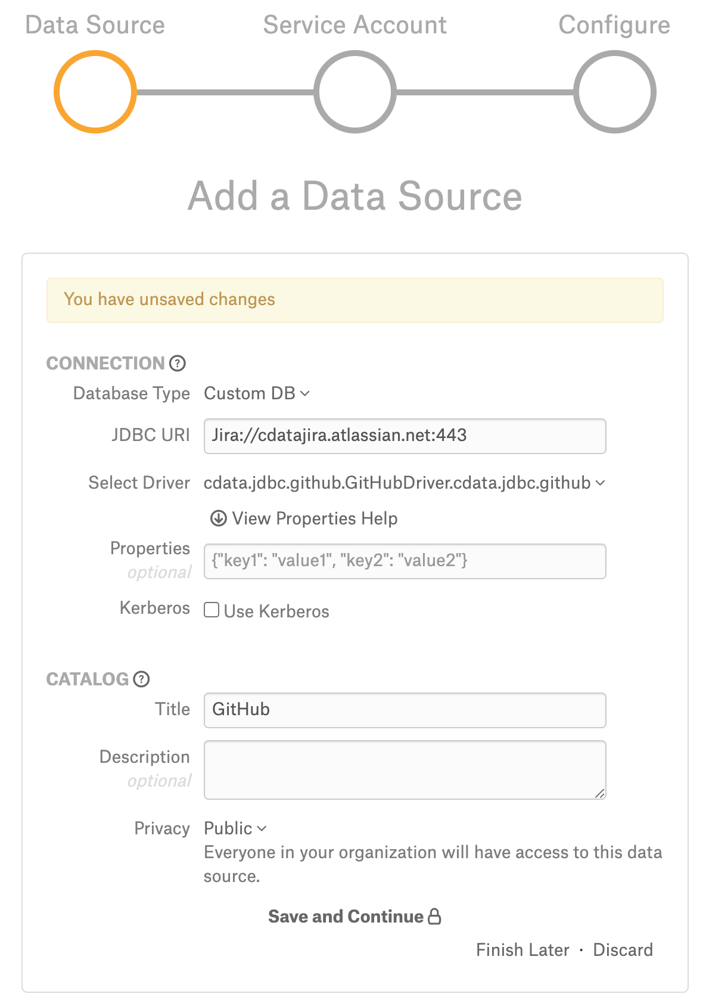
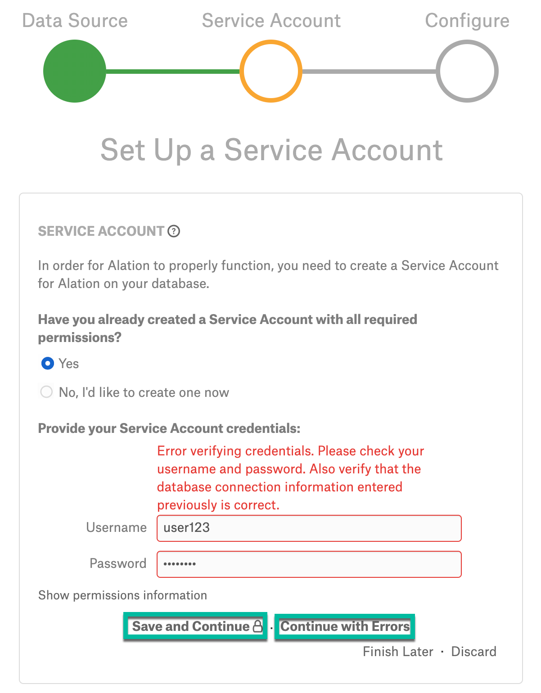
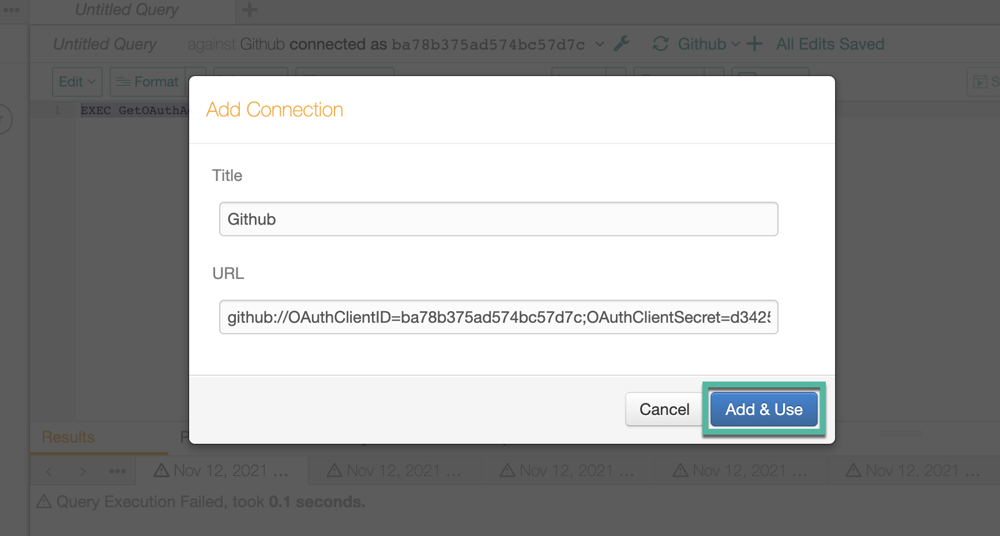
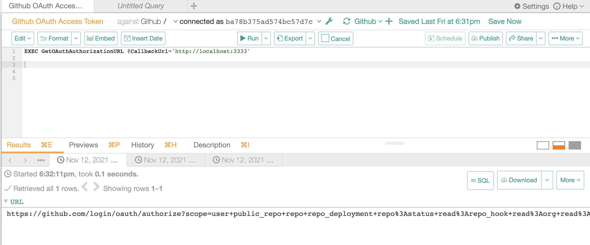
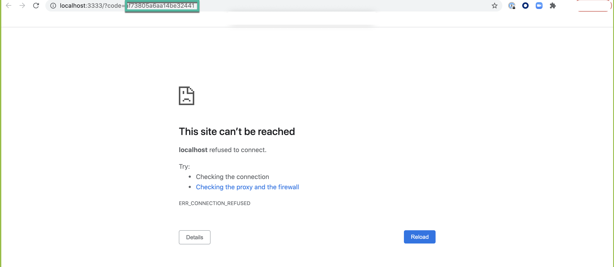
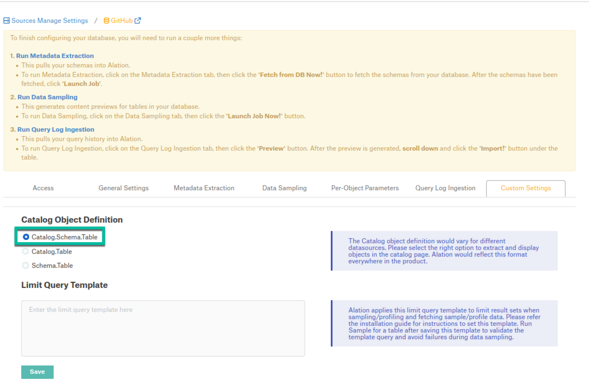

GitHub¶
Applies from 2021.3
Note
In 2021.3, this data source connection is in a Beta state.
Alation has certified the GitHub data source with the following CData driver:
cdata.jdbc.github.GitHubDriver.cdata.jdbc.github
Alation can provide a license for the GitHub CData driver. Refer to How to get a CData Driver and use the scenario appropriate to your case.
Scope of Support¶
Supported as Custom DB with the CData Driver for GitHub
Metadata Extraction (MDE)
Automated MDE
Data Profiling
Sampling
Compose
Lineage is not supported
QLI is not supported
Service Account¶
In order to create a service account, register an app following the steps in Creating an OAuth App in the GitHub documentation. This will generate the following values:
OAuth Client ID
OAuth Client Secret
Use the Client ID as the service account user name and the Client Secret as your service account password.
Required Information¶
JDBC URI for the GitHub data source
JDBC URI¶
When building the URI, include the following minimal list of required parameters:
OAuthClientID - The client ID assigned when you register your application with an OAuth authorization server.
OAuthClientSecret - The client secret assigned when you register your application with an OAuth authorization server.
OAuthAccessToken - The access token for connecting using OAuth.
RTK Key - when you purchase a CData driver from Alation, you are provided an RTK that needs to be included into the URI. If you purchased the driver from CData, you should have a license file that needs to be placed on the Alation server together with the driver .jar file.
The following optional parameters can be either included in the URI or in the Properties filed on the General Settings page if needed:
ProxyServer - The hostname or IP address of a proxy to route HTTP traffic through.
ProxyPort (If proxy connection is used) - The TCP port the ProxyServer proxy is running on.
Using these values, construct the URI according to the pattern given below and proceed to adding the data source.
After you have successfully added the source, you will need to connect to it in Compose, obtain the OAuth Access Token and update the URI on the Data Source Settings > General Settings page. This is described in the sections that follow.
Use the following format for the JDBC URI:
github://OAuthClientID=<Client_ID>;OAuthClientSecret=<Client_Secret>;InitiateOAuth=REFRESH;RTK=<RTK_Key>
Example:
github://OAuthClientID=eb0b62aec57a1010926f6a8133de74d4;OAuthClientSecret=pxArnK7Qef+dDnifGPQ8M/Dy7Up;InitiateOAuth=OFF;RTK=444752465641535552425641454E545042424D33323632390000000000000000000000000000414C5800005559475655474E4E464242370000
Use the following format for the JDBC URI if proxy connection is used:
github://OAuthClient_ID=<ClientID>;OAuthClientSecret=<Client_Secret>;InitiateOAuth=REFRESH;UseSSL=True;SSLServerCert=*;ProxyServer="<ProxyServer_HostName>";ProxyPort="8866";ProxySSLType="NEVER";RTK=<RTK_Key>
Example:
github://OAuthClientID=eb0b62aec57a1010926f6a8133de74d4;OAuthClientSecret=pxArnK7Qef+dDnifGPQ8M/Dy7Up;InitiateOAuth=OFF;UseSSL=True;SSLServerCert=*;ProxyServer="Localhost";ProxyPort="8866";ProxySSLType="NEVER"RTK=444752465641535552425641454E545042424D33323632390000000000000000000000000000414C5800005559475655474E4E464242370000
Set Up in Alation¶
Step 1: Add the CData Driver for GitHub to Alation¶
Depending on how you purchased the CData driver, from Alation or from CData, the driver installation process will be different. Refer to Add the CData Driver into Alation Instance and use the scenario appropriate to your case.
STEP 2: Add a New Data Source¶
Add a new Data Source on the Sources page.
Step 3: Set up the Connection¶
On the Add a Data Source screen of the wizard, specify:
Database Type: Custom DB
JDBC URI: Provide any valid URI with port number 443. This is only a temporary URI to move through the Add Data Source wizard.
Example:
Jira://githubjira.atlassian.net:443
Select Driver: select the JDBC driver for GitHub from the Select Driver drop-down list:
cdata.jdbc.github.GitHubDriver.cdata.jdbc.github
Do not select the Use Kerberos checkbox
Click Save and Continue. The next wizard screen - Set Up a Service Account - will open.

Step 4: Enter Service Account Credentials¶
Select Yes.
Provide any username and password to bypass this screen.
Note
The correct service account username and password will need to be provided on the General Settings tab of the data source Settings page.
Click Save and Continue.
An error message will appear. Click Continue with Errors to navigate to the next wizard screen, Configure Your Data Source.

Step 5: Configure Your Data Source¶
Click Skip this Step. After this step, you are navigated to the Settings page of your data source.
Get the OAuth Access Token¶
To perform Metadata Extraction, you will need to get an OAuth Access Token and include it into the connection URI.
Do the following steps to obtain an OAuth Access Token:
Go to Compose and connect to your GitHub source using the Service Account credentials.
Click the plus icon and provide the JDBC URI using the format described in the URI section. Click Add & Use.
Note
InitiateOAuth parameter in the URI must be set to OFF.
Run the following query in Compose. As
<call_back_url>, provide the callback URL that was provided during the OAuth App creation:EXEC GetOAuthAuthorizationURL @CallbackUrl='<call_back_url>'Example:
EXEC GetOAuthAuthorizationURL @CallbackUrl='http://localhost:3333'This should return a URL as result.
Copy the URL and run it in a new browser. You will see an error message as shown below and a code in the URL.
Copy the code in the URL and add it as a value to the Verifier parameter in the below query.
EXEC GetOAuthAccessToken @Verifier=<Code_Copied_from_URL> **Example:** .. code-block:: SQL EXEC GetOAuthAccessToken @Verifier=32217c96149fda1e96 This should return the OAuth Access Token as result. .. image:: ../../_static/Github_06.pngCopy the OAuth Access Token.
Go to the Settings > General Settings page and edit the connection URI: specify the URI in the correct format and add the OAuth Access Token (refer to the JDBC URI section).
Note
InitiateOAuth parameter must be set to Refresh while adding the generated OAuthAccessToken to the URI.
Pattern:
github://OAuthClientID=<Client_ID>;OAuthClientSecret=<Client_Secret>;InitiateOAuth=REFRESH;OAuthAccessToken=<Access_Token>;RTK=<RTK_Key>Example:
github://OAuthClientID=eb0b62aec57a1010926f6a8133de74d4;OAuthClientSecret=pxArnK7Qef+dDnifGPQ8M/Dy7Up;InitiateOAuth=REFRESH;OAuthAccessToken=Ay6CaEUwVim409lF5jp69bi8CK3JHyGBo0T915AwFEIfngegJNFU89FKJDF33lsd_SM9jH9;RTK=444752465641535552425641454E545042424D33323632390000000000000000000000000000414C5800005559475655474E4E464242370000Save the change. After providing the URI in the required format, you can configure and perform metadata extraction.
Metadata Extraction¶
Configure and perform metadata extraction and verify the results:
In Settings > Custom Settings, set the Catalog Object Definition to Catalog.Schema.Table:
In Settings > Metadata Extraction, set up and perform MDE. Refer to Metadata Extraction.
Profiling¶
Configure and perform Profiling :
Users can run a sample for an individual table on the Samples tab of the Table Catalog page or profile an individual column on the Overview tab of the Column page.
Automatic full and selective Profiling is supported.
Use the Per-Object Parameters tab of the Settings to specify which objects to profile.
Note
Make sure that the Skip Views checkbox of the respective schemas is unchecked to perform the Profiling.
Custom query-based Sampling is supported. Custom Query-Based Sampling allows you to provide a custom query for profiling each specific table.
Deep Column Profiling (Profiling V2 ) is supported.
Sampling¶
Perform Sampling: refer to Sampling.
Query Log Ingestion¶
Not supported.
Compose¶
Log into Compose:
Authenticate in Compose with your GitHub credentials.
Use the Catalog.Schema.Table format for writing queries.
Troubleshooting¶
Logs to collect/review:
For logs related to MDE: taskserver.log, taskserver_err.log.
For logs related to Compose: connector.log, connector_err.log.
For any other errors: alation-error.log, alation-debug.log
To show driver activity from query execution to network traffic, use Logfile and Verbosity. At the end of the JDBC URI, add Logfile=/tmp/log.file;Verbosity=3; which will generate the log file in the specified directory. Set the Verbosity level as required, refer to Logging.
Contact Alation support for help tracing the source of an error or to avoid a performance issue. Following are the examples of common connection errors and show how to use these properties to get more context.
Authentication Errors: Recording a Logfile at Verbosity 4 is necessary to get full details on an authentication error.
Queries Time Out: A server that takes too long to respond will exceed the driver’s client-side timeout. Setting the Timeout property to a higher value will avoid the connection error. Also you can disable the timeout by setting the property to 0 and setting the Verbosity to 2 will show where the time is spent.
The certificate presented by the server cannot be validated: This error indicates that the driver cannot validate the server’s certificate through the chain of trust. If you are using a self signed certificate, there is only one certificate in the chain.
To resolve this error, you must verify yourself that the certificate can be trusted and specify to the driver that you trust the certificate. One way you can specify that you trust a certificate is to add the certificate to the trusted system store; another is to set SSLServerCert.